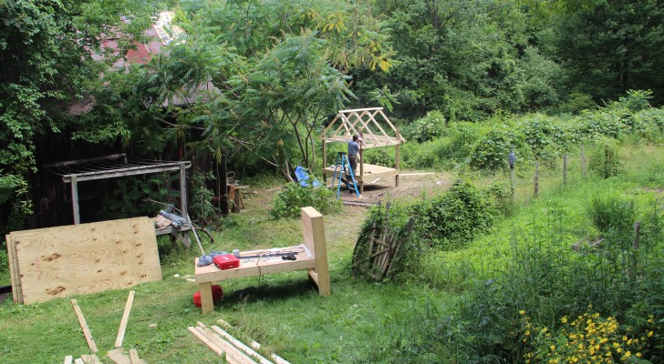
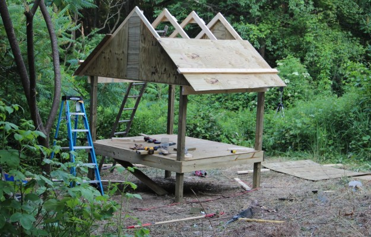
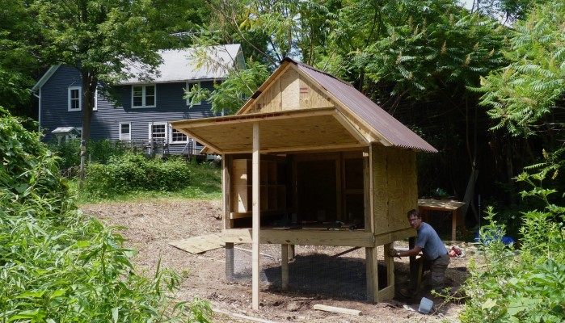
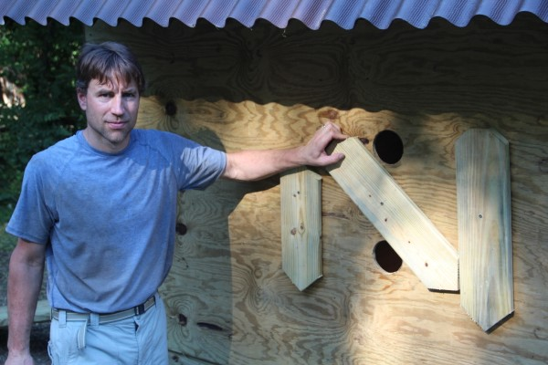
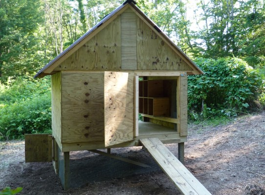
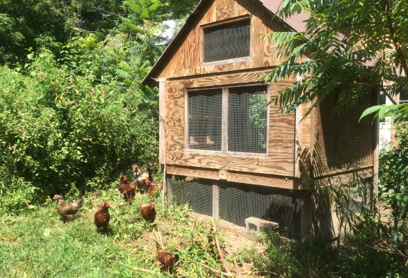

The coop stands on four 4x4 posts, each of which is in a two foot deep hole. Here we are starting to frame in the floor. The boards above my head are temporary - used to keep the posts from shifting until the walls are in place.
In this photo you can see the area around the chicken coop: an old barn to the left (mostly covered in trees), blackberry bushes and concord grape vines to the immediate right, and a fenced in garden to the far right.
Here we are starting to put up the plywood for the roof. If you look closely you can see the small ramp that the chickens can use to walk into the coop from below, although the trapdoor has not been cut in the floor yet.
My dad is putting in the wall with the nest boxes in it. It took some clever planning, but the nest boxes were all cut out of a single sheet of plywood.
There is a trapdoor (which we usually leave open) to allow the chickens to get under the coop. My dad is installing a small door and some wire mesh to keep the chickens in and the predators out. Notice that the back wall is on a hinge - this is really helpful when we need to clean out the coop.
Nest box doors! The chickens climb into the nest boxes from inside of the coop, but these doors let us easily collect the eggs from the outside.
Finished coop with doors closed.
Finished coop with the doors open.
Now we have 12 chickens, mostly Rhode Island Reds At most we've had 32 chickens, from a variety of breeds, including Ameraucana , Barred Plymouth Rocks, and White Leghorns.
Much of the foliage has grown back in around the coop now, and the chickens make paths through the grass and under thr grape vines. There is a fenced in chicken run that is about 50' by 150' around the coop.
A time-lapse video that my dad made during the construction of the coop.
A tour of the chicken coop, taken about four years after construction.